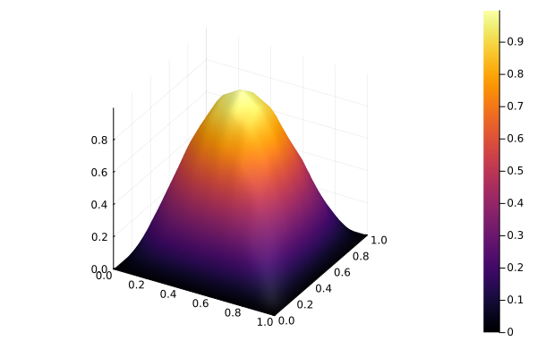

Novo termo de Equação
Esta página é uma extensão do final da explicação da Implementação Base. Se você quer uma explicação do que está sendo feito aqui, recomendamos que leia esta outra página.
Preparando a implementação
Com o código-fonte em mãos, na pasta src/testes, crie um arquivo para testarmos o que implementaremos, por exemplo, testes_novo_termo.jl. Além disso, no final do arquivo include_testes.jl, na mesma pasta, inclua o recém criado.
include("testes_novo_termo.jl")Em seguida, no arquivo criado, vamos implementar uma função chamada novo_termo_2D, para adicionar um novo termo de equação e testá-lo, em um espaço bidimensional. Essa função criada vai ter como base o exemplo em example/Caso2D.jl.
function novo_termo()
# Define o número de sub-intervalos no eixo horizontal e vertical, respectivamente.
Nx1, Nx2 = 8, 8
# Define o tipo da base de funções interpoladoras do subespaço aproximado Vₘ.
baseType = BaseTypes.linearLagrange
# Define extremos do intervalo da malha.
a = (0.0, 0.0)
b = (1.0, 1.0)
# Define a malha com os valores atribuídos acima.
malha = monta_malha_2D_uniforme(baseType, Nx1, Nx2, a, b)
# Define os parâmetros da equação a ser resolvida.
α = 1.0
β = 1.0
f = (x₁, x₂) -> (2 * α * π^2 + β) * sin(π * x₁) * sin(π * x₂)
# Define o pseudo operador linear a(u,v).
function pseudo_a(termos_equacao)
(; ∇u, ∇v, u, v) = termos_equacao
return β * dot(u, v) + α * dot(∇u, ∇v)
end
# Monta e resolve o sistema linear relacionado a esta equação.
c = solve_sys(f, malha, pseudo_a)
# Imprime solução aproximada.
show(c)
# Plota solução aproximada.
return plot_solucao_aproximada(c, malha, false)
endVerifique se está tudo funcionando rodando a função novo_termo_2D(). Se aparecer o gráfico plotado, como abaixo, podemos seguir com o tutorial. 
O gráfico, portanto, apresenta a solução aproximada do problema definido em Equação similar à Poisson no espaço bidimensional, ou seja:
Dada uma função $f: \bar{\Omega} \to \mathbb{R}$ e constantes reais $\alpha > 0$ e $\beta \geq 0$, determine $u: \bar{\Omega} \to \mathbb{R}$ tal que
$
\left{ \begin{aligned} -\alpha\Delta u(x) + \beta u(x) = f(x),\quad x\in \Omega\ u(x) = 0, \quad x \in \Gamma \end{aligned} \right. $
sendo $\Omega$ um subconjunto do $\mathbb{R}^2$, $\Gamma$ a fronteira de $\Omega$ e $\bar{\Omega} = \Omega \cup \Gamma$.
A seguir apresentaremos como adaptar o código para conseguirmos resolver a seguinte variação da equação acima
$
-\alpha(x)\Delta u(x) + \beta u(x) = f(x),\quad x\in \Omega. $
Em breve, adicionaremos o seu desenvolvimento na formulação fraca, necessária para montar a pseudo_a do problema.
Implementando o novo termo
Vá no arquivo src/examples.jl. No final do arquivo, vamos adicionar, à estrutura TermosEquacao, um termo novo para que possamos adicinar uma parcela dependente de x na equacao. Vamos chamar este novo termo de, simplesmente, x. A estrutura sairá de
struct TermosEquacao
u
v
∇u
∇v
endpara
struct TermosEquacao
u
v
∇u
∇v
x
endPara que esse novo termo possa ser considerado nos cáculos do problema, ele deve ser referenciado na funcão montaKᵉ_geral!, especificamente no loop mais interno. A mudança é análoga à realizada em TermosEquacao, saindo de
termos_equacao = TermosEquacao(
ϕᵉ_b,
ϕᵉ_a,
∇ϕᵉ_b,
∇ϕᵉ_a
)para
termos_equacao = TermosEquacao(
ϕᵉ_b,
ϕᵉ_a,
∇ϕᵉ_b,
∇ϕᵉ_a,
x
)Agora basta utilizá-lo. De volta no arquivo inicial testes_novo_termo.jl, vamos alterar a definição de α e, portanto, remova sua definição original trocando
α = 1.0Pela função exemplo
α(x₁, x₂) = x₁ + x₂Além disso, vamos precisar definir uma outra função
∇α(x₁, x₂) = [1 1]Agora precisamos alterar como a pseudo_a funciona. Começamos acrescentando o termo x que criamos na extração dos termos da equação, alterando o trecho
(; ∇u, ∇v, u, v) = termos_equacaopara
(; ∇u, ∇v, u, v, x) = termos_equacaoPor fim, mudamos a utilização da variável para tornar-se uma chamada de função, ou seja, de
return β * dot(u, v) + α * dot(∇u, ∇v)para
return β * dot(u, v) + α(x...) * dot(∇u, ∇v) + dot(dot(∇α(x...), ∇u), v)Note que ambas α e ∇α recebem o ponto x com um splatting, ou seja, no conjunto x.... Além disso, a parcela extra dot(dot(∇α(x...), ∇u), v) é uma consequência de tornar $\alpha$ uma função na equação.
Note que ambas α e ∇α recebem o ponto x com um splatting, ou seja, no conjunto x..., pois é o padrão que utilizamos para uma função receber mais de uma variável a partir de uma tupla. Assim, a definimos esperando duas variáveis de forma que o código base não precise saber essa quantidade de variáveis.
Ao final de todas essas alterações, a função novo_termo_2D ficará assim:
function novo_termo()
# Define o número de sub-intervalos no eixo horizontal e vertical, respectivamente.
Nx1, Nx2 = 8, 8
# Define o tipo da base de funções interpoladoras do subespaço aproximado Vₘ.
baseType = BaseTypes.linearLagrange
# Define extremos do intervalo da malha.
a = (0.0, 0.0)
b = (1.0, 1.0)
# Define a malha com os valores atribuídos acima.
malha = monta_malha_2D_uniforme(baseType, Nx1, Nx2, a, b)
# Define os parâmetros da equação a ser resolvida.
α = 1.0
β = 1.0
f = (x₁, x₂) -> (2 * α * π^2 + β) * sin(π * x₁) * sin(π * x₂)
# Define o pseudo operador linear a(u,v).
function pseudo_a(termos_equacao)
(; ∇u, ∇v, u, v) = termos_equacao
return β * dot(u, v) + α(x...) * dot(∇u, ∇v) + dot(dot(∇α(x...), ∇u), v)
end
# Monta e resolve o sistema linear relacionado a esta equação.
c = solve_sys(f, malha, pseudo_a)
# Imprime solução aproximada.
show(c)
# Plota solução aproximada.
return plot_solucao_aproximada(c, malha, false)
endVerifique novamente se está tudo funcionando rodando a nova função novo_termo_2D(). Se aparecer o gráfico plotado, igual ao de antes das mudanças, as alterações foram realizadas com sucesso!
Você também pode aplicar o tutorial de Estudo de Convergência do Erro e verificar se a convergência do erro segue o esperado. Caso contrário, revise seu código e encontre o erro.